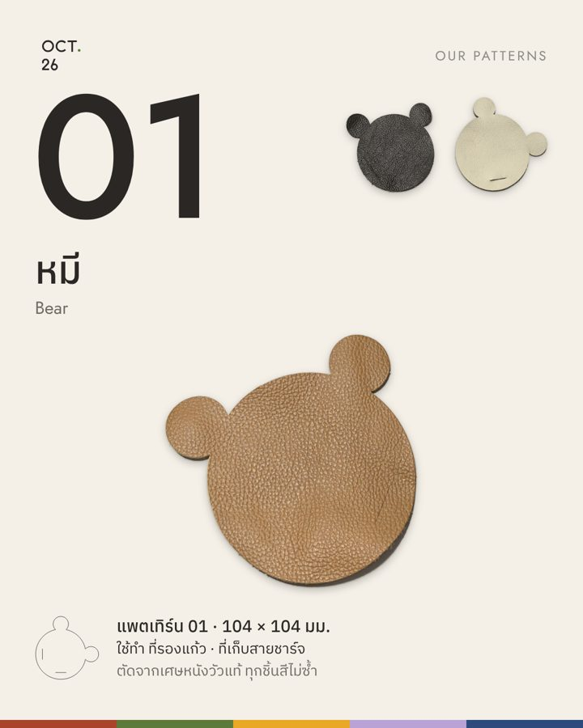
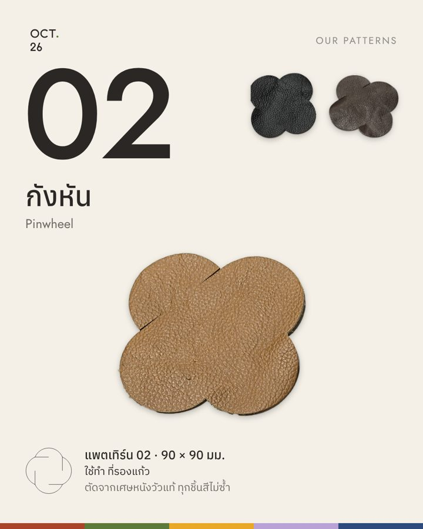
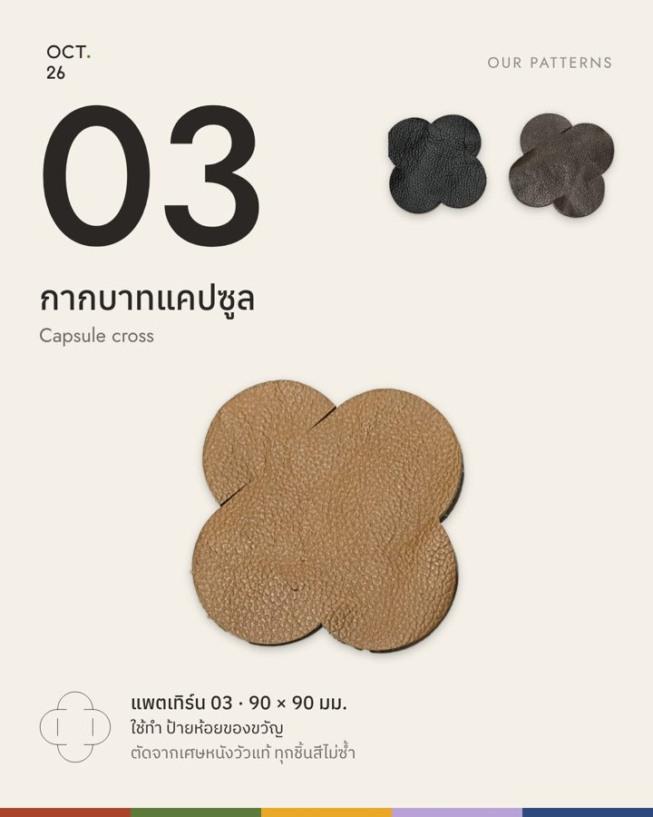
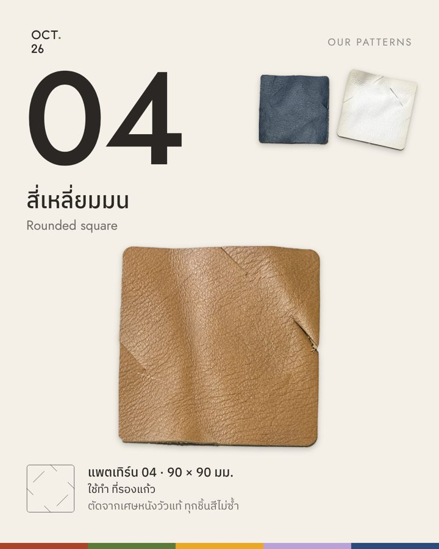
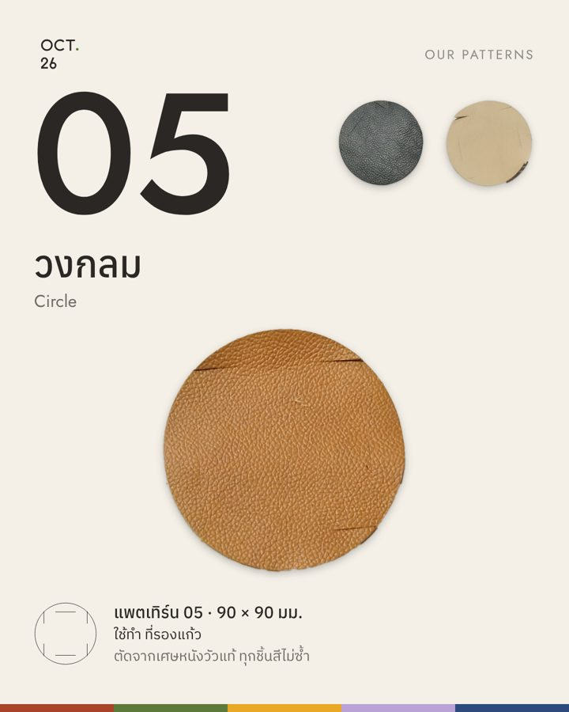
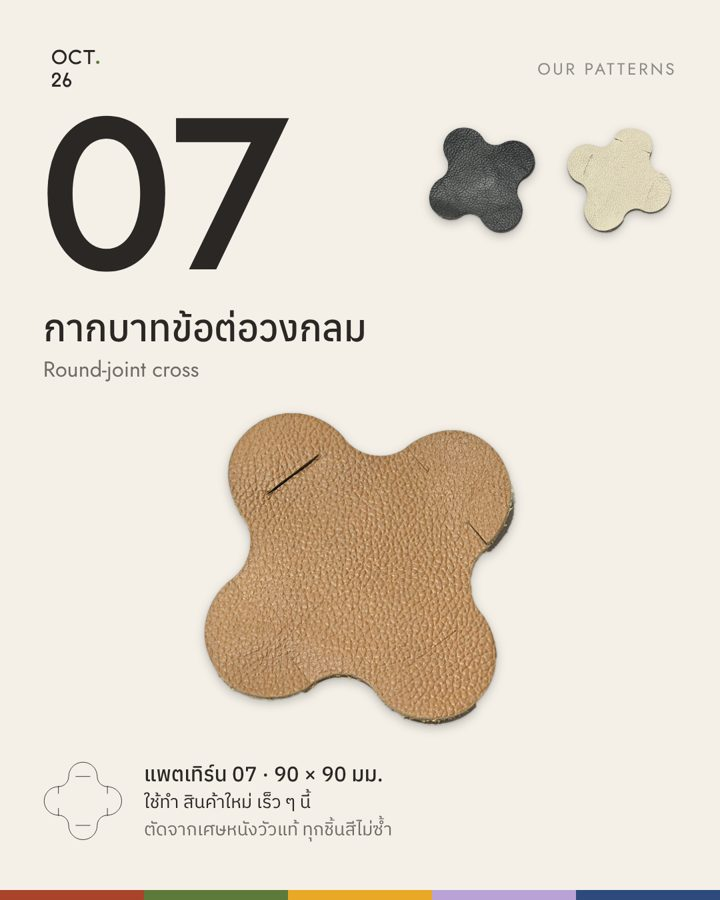
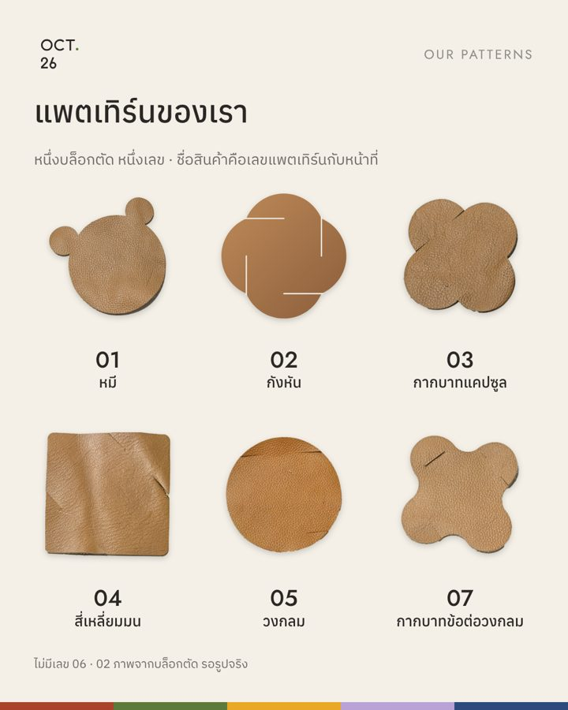

OCT. 26 · Patterns · Brand Bible · 22 Oct 2026
ไดคัตชิ้นหนังจริงจากรูปต้นฉบับ 21 ต.ค. ปรับแสงและสีโดยเทียบกับกระดาษขาว ทำการ์ดแนะนำแพตเทิร์นแยกทีละแบบ ใช้ได้ทั้งบูธและทุกสื่อ เสนอความหมายของ SOI. 02 และ mockup เล่มสรุปแบรนด์ให้ดูก่อนทำจริง
1 · Patterns







2 · SOI. 02
ที่มาเดิม (เล่มแรก): ทุกอย่างเริ่มที่บ้านในซอย 2 คอลเลกชันแรกจึงชื่อ SOI. 02 ส่วนใน Brand Book v2 ผมเขียนว่าเป็น "รอบผลิต" ซึ่งไม่ตรงกับที่พ่อเบคิด ขอเสนอ 3 ทาง
SOI. 02 คือแพตเทิร์นชุดแรก 01–07 ที่เกิดในบ้านซอย 2 ทุกอย่างที่ตัดจากบล็อกชุดนี้อยู่ใน SOI. 02 ถ้าวันหนึ่งทำบล็อกชุดใหม่ ชุดนั้นจะเป็น SOI. 03
ข้อดี: จับต้องได้ อธิบายง่ายที่บูธ ("ชุดนี้มี 6 ลาย") ไปด้วยกันกับชุดที่รองแก้วสะสม 01–07 ที่ผ่านแล้ว และเลขแพตเทิร์นจะอยู่ใต้ SOI. ได้พอดี
แต่ละคอลเลกชันตั้งชื่อตามที่ที่มีความหมายกับบ้าน SOI. 02 คือบ้าน คอลเลกชันต่อไปอาจตั้งตามที่อื่น
ข้อดี: มีเรื่องเล่า · ข้อเสีย: ต้องคิดเรื่องใหม่ทุกครั้ง และลูกค้าแยกไม่ออกว่าต่างกันตรงไหน
ใช้แค่ OCT. 26 กับเลขแพตเทิร์น เช่น "02 ที่รองแก้ว"
ข้อดี: ง่ายที่สุด · ข้อเสีย: เสียชื่อที่มีที่มาจากบ้านไป
3 · Mockup
รวม Brand Book v2 กับ Bible เล่มเดิมเป็นเล่มเดียว สั้น 10 หน้า A4 แนวนอน หน้าละเรื่อง อ่านจบใน 5 นาที ให้ทุกทีม (เว็บ การตลาด พัฒนาสินค้า) ใช้เล่มเดียว ด้านล่างคือหน้าตาตัวอย่าง 4 หน้า
ห้าสีของบ้านซ่อนอยู่หลังป้าย การ์ดในซอง และเส้นคาด
วางบนกระดาษ A4 ขาวทั้งแผ่น ไม่ให้ชิ้นหนังล้นขอบ วางห่างกัน 1 นิ้ว ถ่ายตรงจากด้านบน ใช้แสงจากหน้าต่าง ไม่เปิดแฟลช ถ่ายรูปละ 1 แพตเทิร์น แล้วส่งให้ไดคัต
pattern-intro-20261022/ (ชิ้นหนังขนาดเว็บอยู่ใน cut-web/ สคริปต์ไดคัตคือ cutout.py)